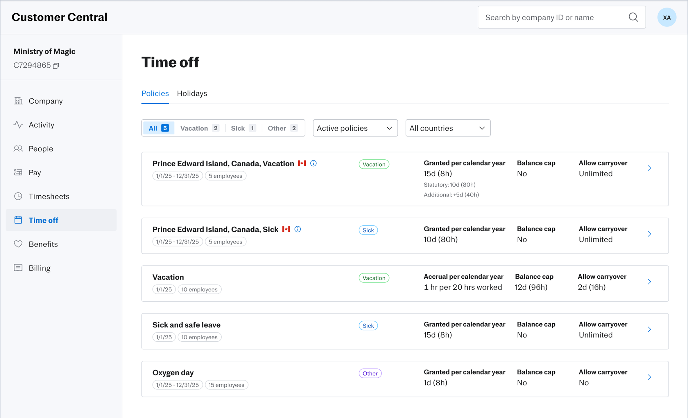
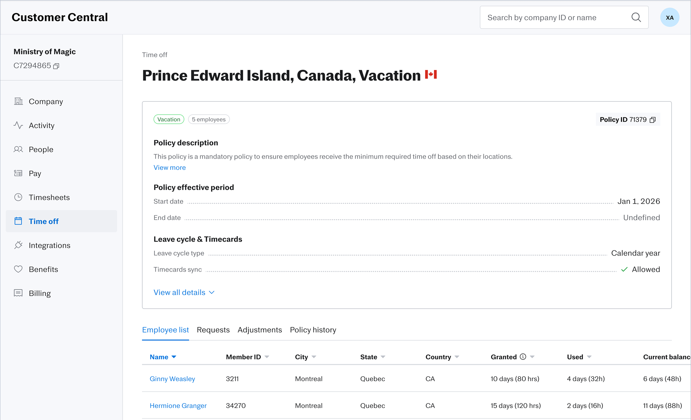
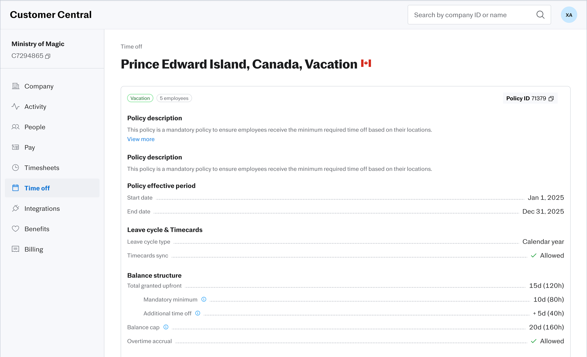
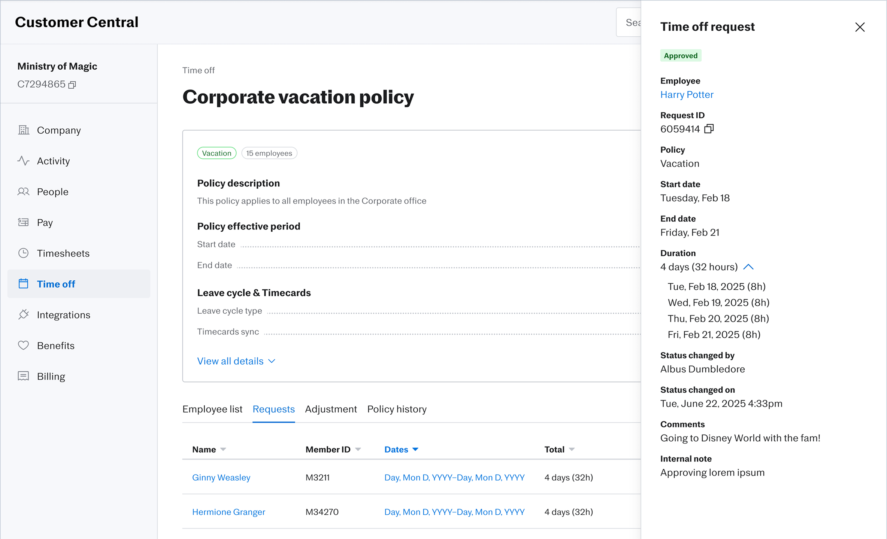
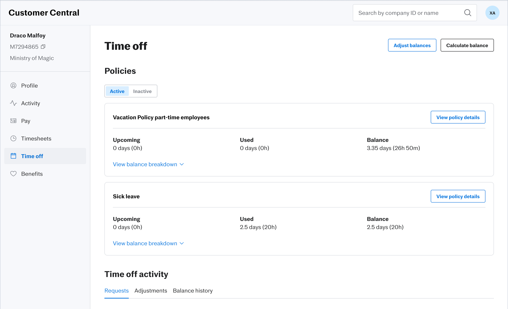
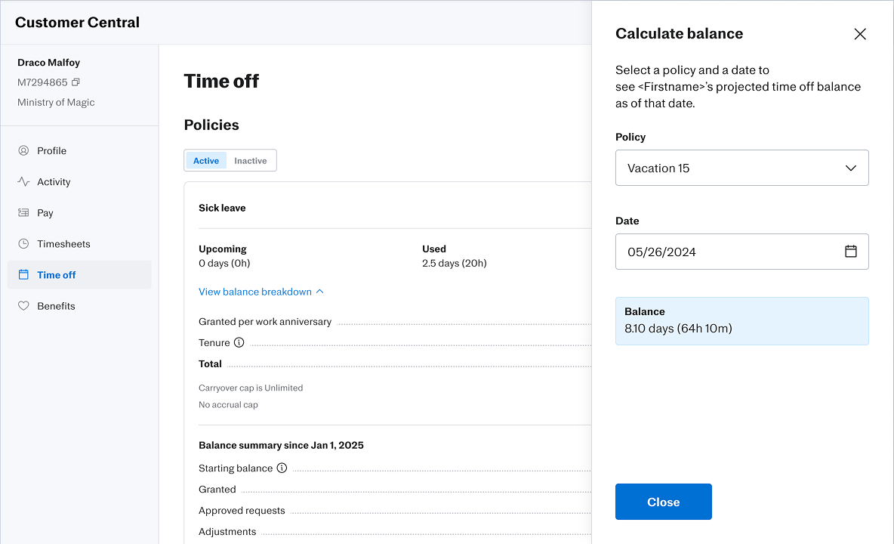
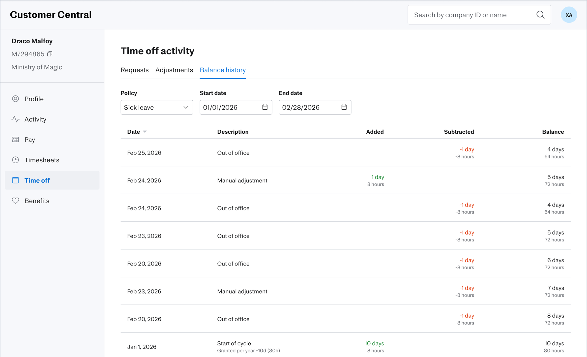
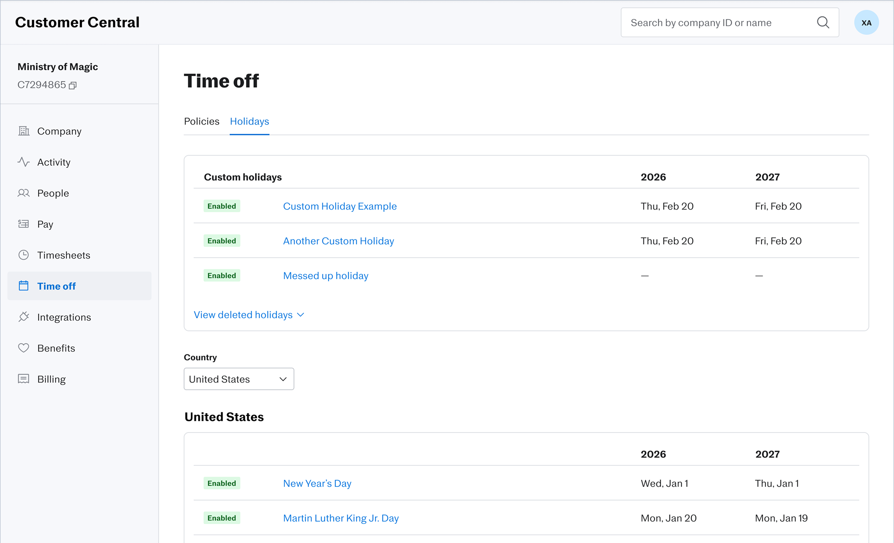
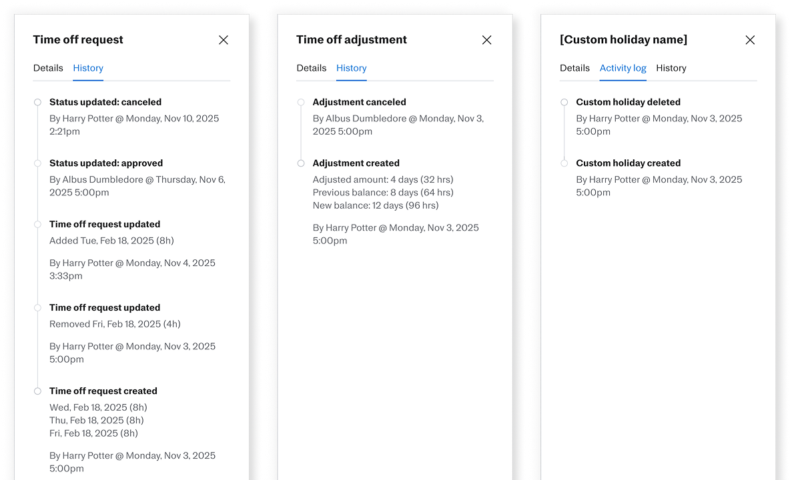

Justworks Time Off Internal
Transitioning 100% of CSO to a new internal experience, Customer Central, for time off tickets.









My Role
- Led research with internal Customer Success Organization, ensuring the new tool reduced cognitive load and improved resolution times.
- Conducted a comprehensive audit of fragmented workflows to define a migration roadmap, balancing feature parity with platform modernization.
- Partnered with Time Off Mission Team to capture and understand changes from the customer experience.
- Led workshop to develop shared DRI and strategy between Time Off, Internal Tools, and Enablement.
The Team
- Myself as Staff Experiences Designer on Internal Experiences
- Internal Tools PM
- Internal Tools FE Eng Manager & Team
- Time Off PM
- Time Off BE Eng Manager & Team
- People Experiences Design Team
- Customer Success (CSMs, Specialists, HR consultants)
- Customer Success Enablement
Strategic Challenge
Justworks' antiquated internal tools system, CSTools, was not scalable and was rife with technical debt. A new internal tool, called Customer Central, was being developed with a goal to move data and workflows out of CSTools in an organized and thoughtful manner. The Time Off team was undergoing a replatform including a brand new BE service. A decision was made to not connect this new service to CSTools and contribute to its longevity, requiring all time off data and workflows to be moved to Customer Central. I was tasked with leading the design migration to Customer Central, ensuring 100% data parity while managing the change for a 250+ person Customer Success Organization.
The Results
- Successfully turned off Time Off in CSTools (old internal tool).
- Supported the migration of 9,276 companies with an active time off policy to the policy configuration through internal tools.
- Moved 4 workflows from Internal to self-service for the customer including editing a time off policy and editing a time off request.
Key Decisions & Trade-offs
- Strategic Scope Reduction: I advocated for the removal of 'Policy Editing' capabilities, a controversial but necessary move to shift the product toward a self-service model. This decision reduced frontend complexity and aligned with our long-term goal of empowering customers through self-service. While CSO was nervous to lose this capability, I highlighted the new customer-facing policy editing should greatly reduce tickets asking for help editing a policy.
- Development of New Audit Service: The old CSTools had a limited audit trail called "The dumper" where data was dumped and the user would have to search through it for historical context. I partnered with a BE team and developed a new framework to visually display an audit history to objects such as the time off policy, time off request, and custom holiday. Time off was the first area to incorporate the new audit service.